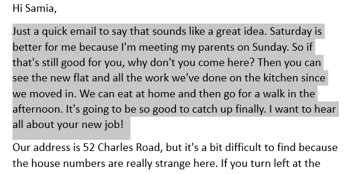

Word - aligning
Aims of the class
- Practice aligning
- Practice copying and pasting
- Learn how to use page break
- To left
- To center
- To right
- To both - justification

And use one of these buttons to change the aligment:
Today goal is to make the file that looks like this this .
Task 1 - The poem
Open Microsoft Word. The easiest way is to open it is to open menu start and type Word to find the app.
Here is a poem. Copy it to word:
Text formatting
In the realm of words, a dance on the page,
Left-aligned verses, structured and sage.
Lines standing tall, in orderly array,
A symphony of letters, in the light of day.
In the center stage, they find repose,
Balanced and poised, where harmony flows.
Equidistant beauty, a visual delight,
In the heart of the page, they shimmer bright.
Right-aligned prose, a steadfast march,
Words in formation, a compelling arch.
On the edge of reason, they confidently stand,
A textual fortress, etched in the sand.
In the leftward gaze, tradition finds its root,
Anchored in order, a structured pursuit.
Each line begins with a familiar beat,
A rhythmic dance, a pattern sweet.
In the heart of the page, where echoes resound,
Verses find solace, in the center, they're bound.
No leftward lean, nor rightward sway,
A symphony of words, in perfect array.
Then to the right, where freedom lies,
A departure from norms, a pleasant surprise.
Here, the lines reach for the unknown,
An uncharted territory they call their own.
Task 2 - The text
In the same file add a PAGE BREAK
Using CTRL + Enter
Then copy following text
Justifying
Justification, in the realm of typesetting and text formatting, is a subtle yet impactful technique that influences the visual harmony and readability of a document. The practice extends beyond mere alignment, transcending the confines of left, center, or right orientations. Justifying text, often referred to as full justification, is the process of adjusting spaces between words to ensure that both the left and right edges of a block of text align uniformly.
When we delve into the world of justification, we encounter the delicate dance between order and aesthetics. The leftward pull of tradition, with its roots in centuries of typographic norms, dictates a structured and regimented approach. Each line begins with the familiar beat of a left-aligned rhythm, creating a sense of continuity and predictability. This method is time-tested, providing a stable foundation that many readers find comforting and easy to follow.